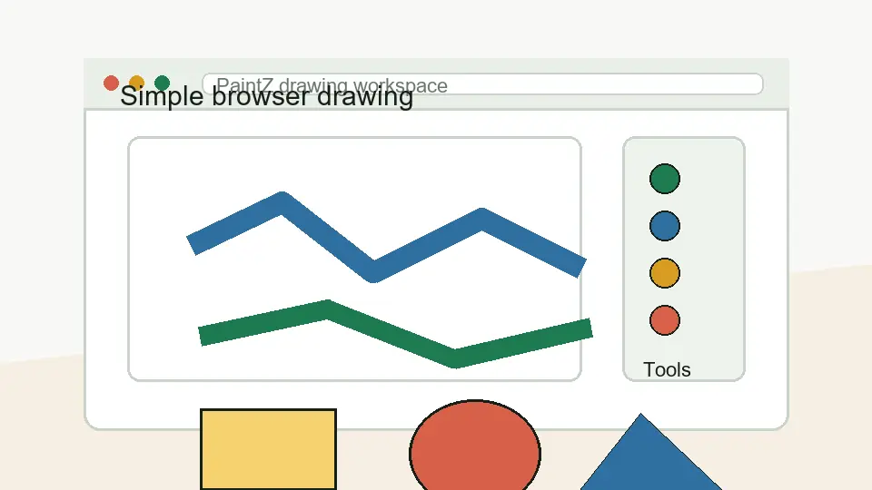

Browser drawing app notes
PaintZ app guide for simple drawing work.
PaintZ is the kind of app I would look at when I need a simple paint-style drawing tool in the browser instead of a heavy image editor. This guide keeps the focus on practical use: Chromebook drawing, quick edits, offline-friendly expectations, and the limits that matter before you rely on it.

Main guide
My practical notes on PaintZ app
A direct, human-style overview of what PaintZ is, who it suits, and why people compare it with classic paint tools.
Chromebook intent
PaintZ for Chromebook
A focused page for the strongest search angle: simple drawing and image editing on Chromebook or Chrome OS.
Feature clarity
Features and limits
A clean explanation of where PaintZ feels useful and where a more advanced editor is a better choice.
Quick answers
PaintZ app FAQ
Short answers about app type, offline use, Chromebook fit, and how to think about PaintZ compared with heavier editors.
Why this guide is structured this way
The search results for PaintZ are not asking for a long generic drawing-app essay. They point toward people trying to identify the right app, understand whether it works well on Chromebook, and decide whether a lightweight browser paint tool is enough for their task.
I did not add an external open or download button because no specific URL was provided for this project. The live pages use internal navigation only until that URL is confirmed.